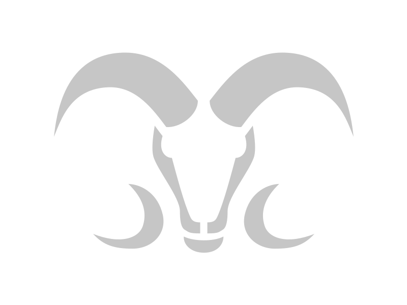

<!-- Descripcion de navbar.component.html: programa que define la estructura del componente "navbar".
Su proposito es desplegar la barra de navegacion.
Porpiedad del equipo WellSoft.
Ultima edicion por: Arturo Garza Campuzano
Fecha de creacion: dd/mm/aaaa < 05/05/2023
Fecha de modificacion: 19/05/2023 -->

<mat-toolbar class="navbar navbar-expand">
  <!-- Logo -->
  <a routerLink="/0">
    
  </a>
  <div>
    <!-- Titulo -->
    <a routerLink="/0" class="no-style-link"> ATHLETICS OPEN </a>
  </div>
  <div class="dropstart" style="display: flex; align-items: center">
    <ul class="navbar-nav fs-6">
      <li class="nav-item dropdown">
        <!-- Dropdown de Edificios -->
        <a
          id="dropdownEdificios"
          class="nav-link dropdown-toggle text-white"
          href="#"
          role="button"
          data-bs-toggle="dropdown"
          aria-expanded="false"
        >
          Edificios
        </a>
        <ul
          class="dropdown-menu dropdown-menu-left"
          aria-labelledby="navbarDarkDropdownMenuLink"
        >
          <!-- Lista de Edificios -->
          <li id="opcionEdificios" *ngFor="let edificio of listaEdificios">
            <a
              class="dropdown-item"
              [routerLink]="['/', edificio.IdEdificio]"
              (click)="enviarFoto(edificio.Foto)"
              >{{ edificio.Nombre }}</a
            >
          </li>
          <li><hr class="dropdown-divider m-0" /></li>
          <li id="opcionTodos">
            <a
              class="dropdown-item"
              [routerLink]="['/0']"
              (click)="
                enviarFoto(
                  'https://www.arquired.com.mx/wp-content/uploads/2017/05/campustecmtywh.jpg'
                )
              "
              >Todos</a
            >
          </li>
        </ul>
      </li>
    </ul>

    <!-- Boton Admin -->
    <button
      routerLink="/admin/login"
      target="sideBar"
      rel="bookmark"
      routerLinkActive="active"
      mat-button
    >
      Admin
    </button>
  </div>
</mat-toolbar>
